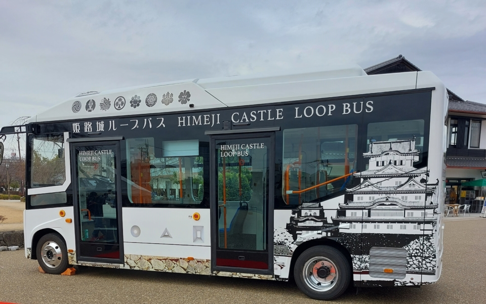
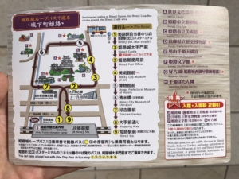
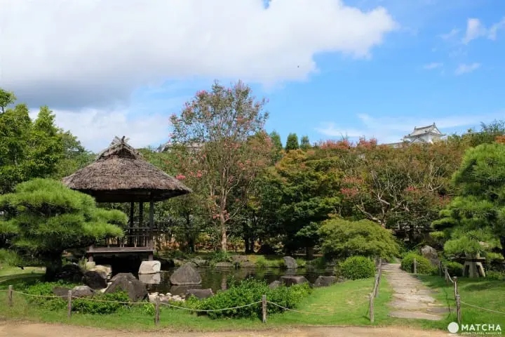
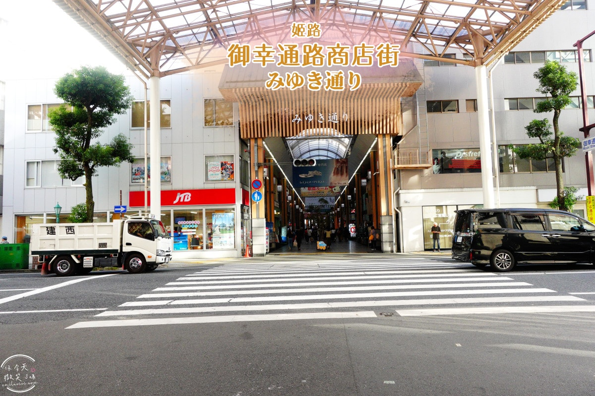

大阪車站 ➡️ JR 姬路站
搭乘 JR 神戶線新快速 (網干/播州赤穗方向)。車程 65 分鐘。
【去程 JR 新快速其餘班次】
07:12 ➡️ 08:18 抵達
07:27 ➡️ 08:32 抵達（原定）
07:44 ➡️ 08:52 抵達
JR 姬路站 ➡️ 姬路城
在姬路站北口（神姬巴士 6~10 號乘車處）搭乘公車至「姬路城大手門前」下車（車程 5 分鐘，100 日圓）。想活動筋骨也可以沿著「大手前通」大馬路直直步行過去（約 15~20 分鐘）。


姬路城循環巴士行駛路線：①姬路站前（6號乘車處）→②姬路城大手門前→③姬路郵局前→④美術館前→⑤博物館→⑥清水橋（文學館附近）→⑦好古園前→⑧大手前通→⑨姬路站前
行駛日：3月～11月每天，以及12月～2月的週末與國定假日（年末年初有可能會行駛）
費用：搭乘1次 大人 190日圓、兒童 100日圓（兒童：6歲～小學6年級）
姬路城 (天守閣)（2hr）
建議調前！趁早上人潮最少時先攻頂。天守閣階梯極陡，請穿好穿脫的鞋子（入內需脫鞋拎著）。
姬路城與好古園有售「共通入場券」，比分開買便宜很多，記得買這張！
成人（18歲以上）JPY 2,600・兒童（未滿18歲）JPY 0（購票時需進行資格確認）

11:00 - 12:30好古園（1.5hr）
從姬路城大手門出來，往右側步行約 3~5 分鐘即可抵達好古園。園內非常雅致。
如果想在此用餐，園內的「活水軒」可以邊看庭園瀑布邊享用蕎麥麵或日式便當（但中午可能需排隊）。

12:30 - 14:30御幸通商店街（午餐／逛街 2hr）
從好古園步行回車站方向，會經過這條有拱頂的遮陽商店街。
午餐推薦：商店街內有著名的姬路關東煮、姬路名物「穴子魚（星鰻）」料理，或是外皮酥脆的明石燒。
步行至 JR 姬路站月台
穿過商店街即可直接抵達 JR 姬路站。
建議提前 10 分鐘到月台，回大阪的新快速是起點發車，提早排隊通常會有位子坐，可以一路睡回大阪。
JR 姬路站 ➡️ 大阪車站
搭乘 JR 神戶線新快速 (野洲/米原方向)。車程 76 分鐘。
【回程 JR 新快速其餘班次】
14:27 ➡️ 15:43 抵達
14:42 ➡️ 15:58 抵達（原定）
14:57 ➡️ 16:13 抵達